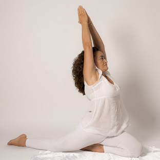
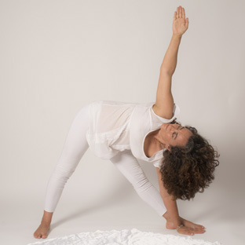

PRACTICA YOGA
Las sesiones
Clases de YOGA
- Hatha Yoga
- Kundalini Yoga
- Nagna Yoga
Las prácticas se realizan preferentemente en descarga. Esto beneficia especialmente a los discos intervertebrales. Sabemos que con el paso del tiempo el disco se irá deshidratando progresivamente y que se va a ver perjudicado por los pellizcamientos o presiones excesivas que estén desigualmente repartidas. Algunos ejercicios tienen precisamente como finalidad la rehidratación de dichos discos y, por lo tanto, con nuestras prácticas podemos conservar nuestra columna vertebral en mejores condiciones.
Los estiramientos tienen efectos sobre la circulación sanguínea y linfática. A diferencia de la circulación arterial, la linfa no dispone de un órgano que la impulse a través de los canales linfáticos. Esta se desplaza gracias a las diferencias de presión que ejercemos sobre dichos canales durante el movimiento. Los estiramientos van a mejorar no sólo la circulación linfática, sino que también van a facilitar una buena difusión de la misma entre los tejidos.
Este factor es fundamental para conservar la elasticidad, ya que el buen deslizamiento entre las diferentes capas de tejido es esencial para ello. A nivel del sistema nervioso neurovegetativo, proporcionan una sorprendente y clara respuesta de autorregulación.
Con frecuencia algunos alumnos vienen a las clases muy estresados y enseguida se dan cuenta de cómo las prácticas se convierten en una excelente herramienta para la reducción del estrés.
Tienen una especial repercusión a nivel de las fascias, que son las membranas que recubren a los músculos; ellas finalmente son las que determinan que un músculo con el paso del tiempo esté más retraído. El tejido no es continuo, pero debido a la disposición de los músculos con relación a las articulaciones y a las fascias que recubren a ciertos grupos de músculos, podemos hacernos una idea de continuidad o globalidad. Esto quiere decir que en nuestra estructura corporal existe una relación mecánica entre las partes. Es como si habláramos de un gran traje de músculos y fascias que limita o permite un adecuado movimiento de nuestro cuerpo en el espacio y por lo tanto una buena relación con la fuerza de la gravedad. Esta visión nos va llevar en la práctica a trabajar dentro de un espíritu de globalidad, es decir, que al realizar un estiramiento vamos a prestar especial atención a no producir ciertas compensaciones en el otro extremo de la cadena. Si es posible vamos a intentar estirar a la vez de los dos extremos de la misma para encontrar así una mayor eficacia en la respuesta.
Los estiramientos llevados a cabo en estas condiciones tendrán un efecto muy benéfico sobre las articulaciones, produciendo a nivel de las mismas una descompresión que favorecerá a los cartílagos articulares.


Tienen una especial repercusión a nivel de las fascias, que son las membranas que recubren a los músculos; ellas finalmente son las que determinan que un músculo con el paso del tiempo esté más retraído. El tejido no es continuo, pero debido a la disposición de los músculos con relación a las articulaciones y a las fascias que recubren a ciertos grupos de músculos, podemos hacernos una idea de continuidad o globalidad. Esto quiere decir que en nuestra estructura corporal existe una relación mecánica entre las partes. Es como si habláramos de un gran traje de músculos y fascias que limita o permite un adecuado movimiento de nuestro cuerpo en el espacio y por lo tanto una buena relación con la fuerza de la gravedad.
Esta visión nos va llevar en la práctica a trabajar dentro de un espíritu de globalidad, es decir, que al realizar un estiramiento vamos a prestar especial atención a no producir ciertas compensaciones en el otro extremo de la cadena. Si es posible vamos a intentar estirar a la vez de los dos extremos de la misma para encontrar así una mayor eficacia en la respuesta.
Los estiramientos llevados a cabo en estas condiciones tendrán un efecto muy benéfico sobre las articulaciones, produciendo a nivel de las mismas una descompresión que favorecerá a los cartílagos articulares.
Beneficios de practicar YOGA
- Aliviar molestias y tensiones de la espalda.
- Mejorar nuestra postura.
- Conservar la elasticidad y el movimiento.
- Liberar la respiración.
- Relajación y reducción del estrés.
- Acondicionar para el deporte evitando lesiones.